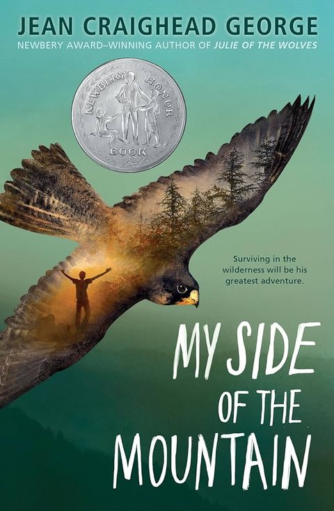

Summary
My Side of the Mountain is a book that I love so much that I've read it at least five times over. It is about a boy named Sam Gribley who has to survive in the wild by himself. I can relate to him in several ways because sometimes I feel like I want to go run off and live in a tree. I think it's really cool how he tamed a falcon and built his own home in the woods. My favorite part of the book was when he stole a deer from a hunter by hiding it in a bush, then climbing up a tree and making great horned owl noises. I think that I would like to try living in the wilderness for a little while.
What I Learned
I learned that Native Americans made canoes by burning out the middle of a log.
My Rating
⭐⭐⭐⭐⭐
Favorite Quote
"You should not try to live in the wilderness unless you like eating spinach and oysters," p.166.← Back to My Library